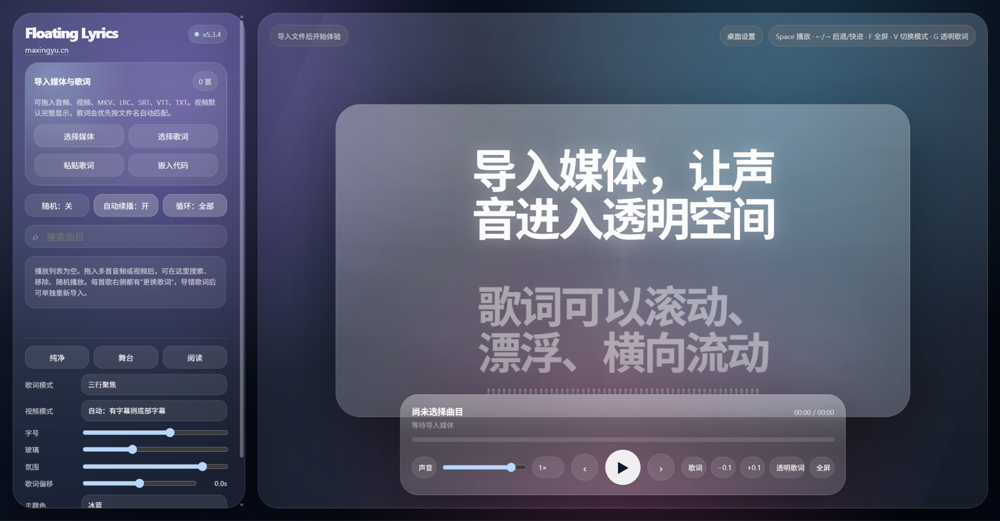
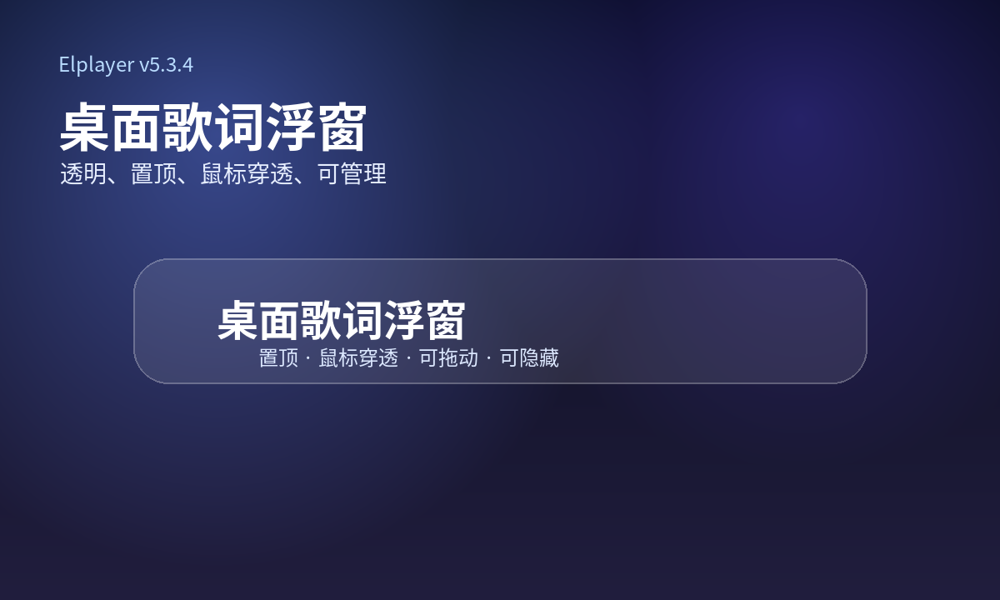
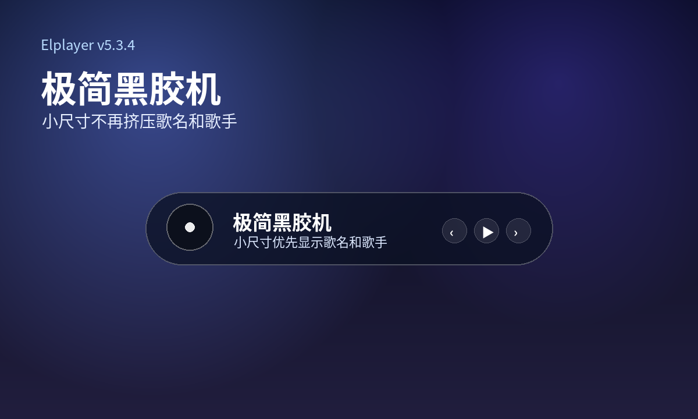
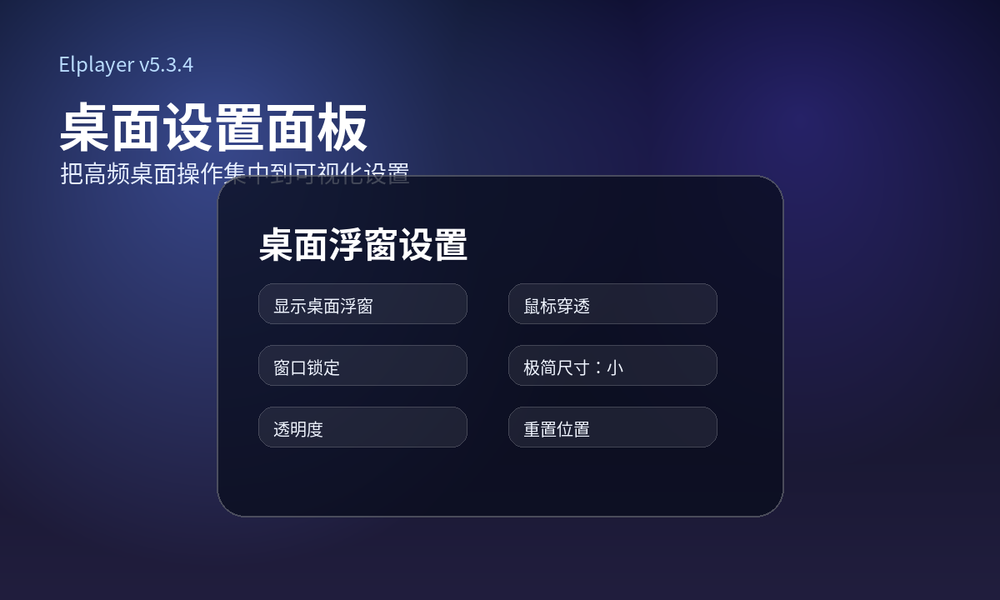
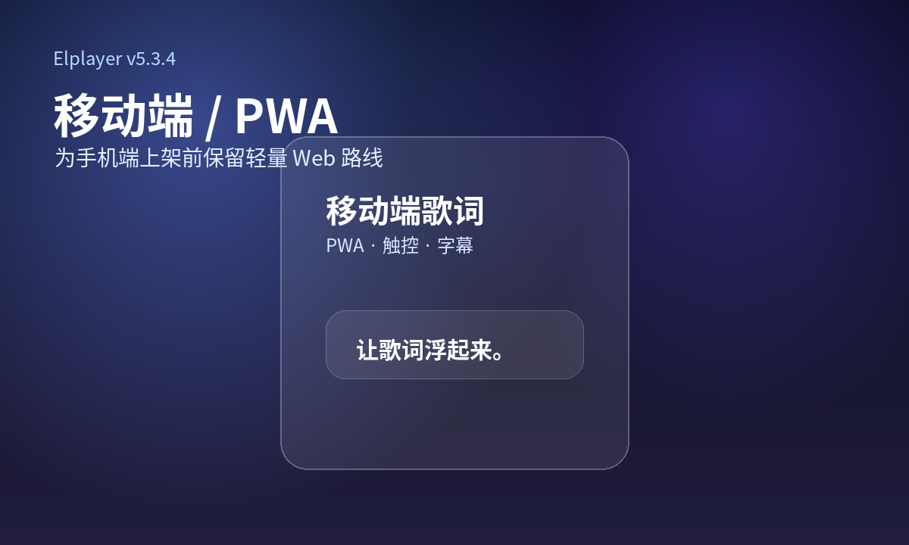

桌面歌词
透明浮窗、窗口置顶、鼠标穿透、窗口锁定和可视化桌面设置。
Elplayer 支持本地音频、本地视频、LRC 歌词、SRT/VTT 字幕、桌面歌词浮窗和极简黑胶机模式。它适合听歌、看 MV、播放课程视频、展示字幕，也适合嵌入个人网站。

透明浮窗、窗口置顶、鼠标穿透、窗口锁定和可视化桌面设置。
隐藏歌词，只保留播放动效、歌名、歌手和基础播放控制。
支持 SRT/VTT 字幕和 LRC 浮动歌词，兼顾 MV、电影片段和课程视频。



